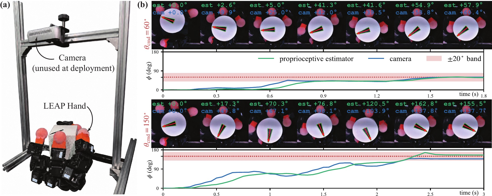
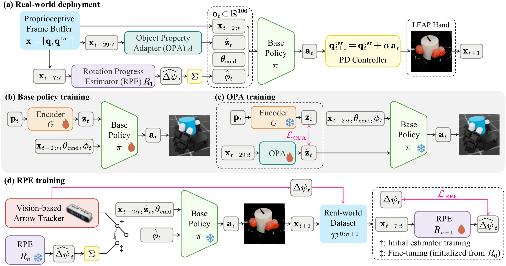
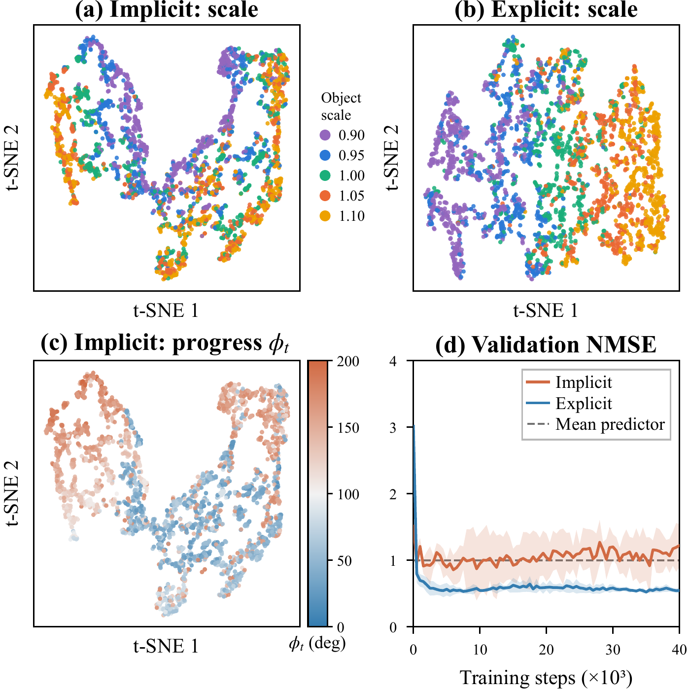
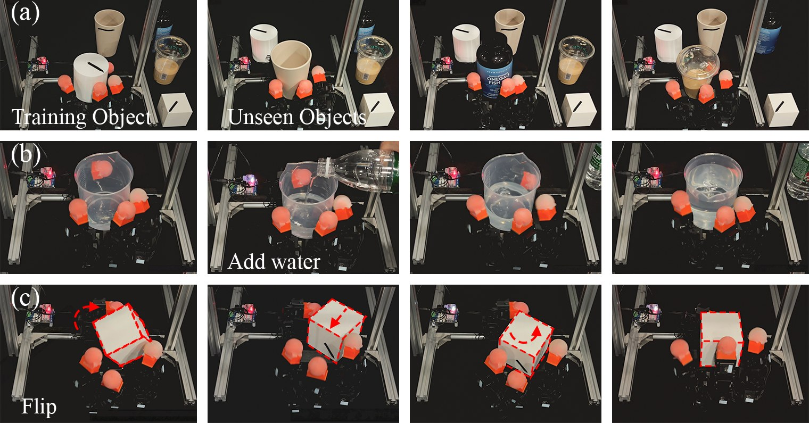

DexOrient: Proprioceptive In-Hand Object Reorientation
with Precise Command Following
Abstract
In-hand reorientation enables robots to place an object in the target pose required by downstream tasks. Existing proprioceptive approaches have demonstrated goal-conditioned reorientation, but following continuous-valued commands precisely without external object-pose sensing remains challenging. We present DexOrient, a proprioception-only framework for precise, command-guided reorientation of objects in hand. An object property adapter (OPA) infers a latent representation of object properties, while a rotation progress estimator (RPE) predicts per-step angular increments that are accumulated into rotation progress. A policy trained in simulation uses both estimates to rotate the object and stabilize it at the commanded angle. The RPE is fine-tuned on real-robot trajectories collected from its own closed-loop rollouts, reducing the bias in tracking rotation progress.
On the LEAP Hand, DexOrient achieves 81.0% success within a 20° tolerance for commands from 22.5° to 180°, up from 57.5% before fine-tuning. In comparison, an RMA-style baseline that jointly encodes object properties and rotation progress in a single latent achieves a lower success rate of 44.0%. Qualitative demonstrations include unseen objects, mid-command mass changes, and external disturbances.
Real-World Command Following

One trial per command on the real hand. Overlay: camera-measured angle (orange) and the proprioceptive estimate (blue). The camera is used for evaluation only.
How DexOrient Works

Command Tracking on the Real Hand
200 commands, 22.5°–180°, ±20°
the vision oracle
RPE fine-tuning
vs. >40° for a timer

Decoupling Rotation Progress from Object Properties
Explicit (E) DexOrient, Fig. 2(a)
Implicit (I) RMA-style baseline
Table I. Command tracking performance and implicit-explicit comparison. Teacher rows use privileged inputs in simulation, and Student rows replace them with estimates. On hardware, the vision oracle supplies camera-measured progress, and R0, R1 are the RPE checkpoints (Sec. IV-C). N denotes the number of trials. Success rates follow the settling and accuracy criteria in Sec. IV-A. The mean progress error is measured against the simulator or the camera, and is N/A for rows without a rotation progress estimate. Slope, intercept, and R2 come from a least-squares fit of θach on θcmd.
| Rollout | Progress encoding | N | Success rate (%) | Mean |φt − φ̂t| (°) | Median |θach − θcmd| (°) | Slope | Intercept (°) | R2 | ||
|---|---|---|---|---|---|---|---|---|---|---|
| θe = 10° | θe = 15° | θe = 20° | ||||||||
| Teacher (sim) | Implicit | 8192 | 99.84 | 99.95 | 99.95 | N/A | 1.12 | 1.0098 | −1.09 | 0.9983 |
| Explicit | 8192 | 99.48 | 99.51 | 99.52 | N/A | 0.68 | 0.9997 | 0.44 | 0.9995 | |
| Student (sim) | Implicit | 8192 | 45.54 | 64.37 | 78.17 | N/A | 11.05 | 1.0589 | 2.11 | 0.9176 |
| Explicit (R1) | 8192 | 73.62 | 87.71 | 93.20 | 5.29 | 5.44 | 1.0050 | 0.81 | 0.9611 | |
| Real | Explicit (vision oracle) | 730 | 99.86 | 100.00 | 100.00 | N/A | 1.14 | 0.9895 | 0.71 | 0.9979 |
| Implicit | 200 | 28.00 | 36.50 | 44.00 | N/A | 23.62 | 0.7880 | 0.82 | 0.2833 | |
| Explicit (R0) | 200 | 26.50 | 42.50 | 57.50 | 20.79 | 16.91 | 1.2483 | −13.78 | 0.8365 | |
| Explicit (R1, ours) | 200 | 58.00 | 72.00 | 81.00 | 10.60 | 8.27 | 0.9200 | 4.25 | 0.8935 | |

Generalization and Robustness

Code and checkpoints
The training environment, the three-stage training scripts, the evaluation suite, the hardware deployment code, and the teacher, adaptor and rotation-estimator checkpoints will be released upon publication.
The implementation builds on the open-source hora training code and the LEAP Hand simulation assets; both are third-party and cited in the paper.
BibTeX
@inproceedings{anonymous2027dexorient,
title = {DexOrient: Proprioceptive In-Hand Object Reorientation with Precise Command Following},
author = {Anonymous},
booktitle = {Under review},
year = {2027}
}